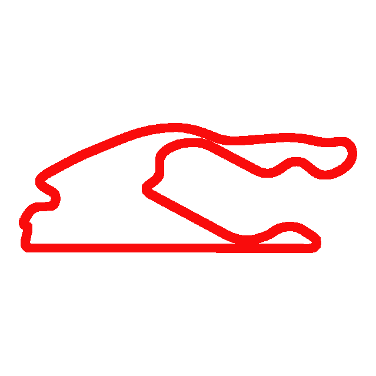
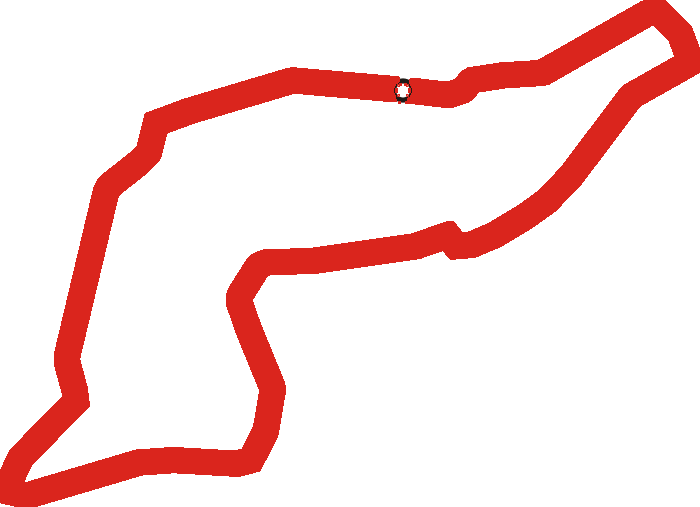
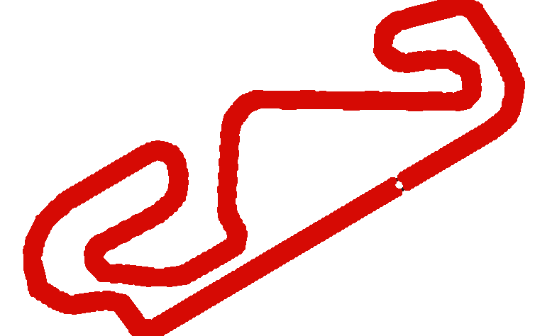
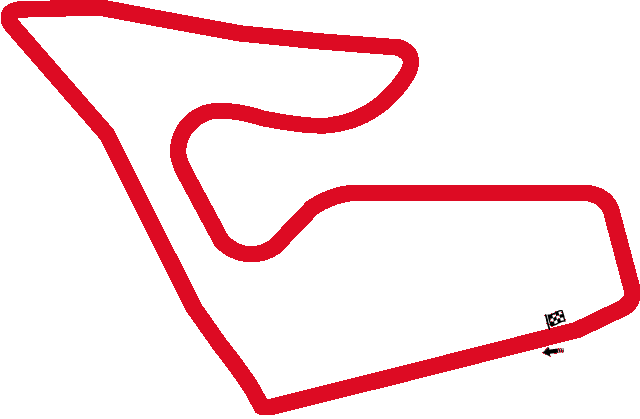
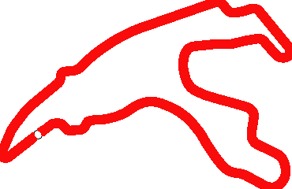
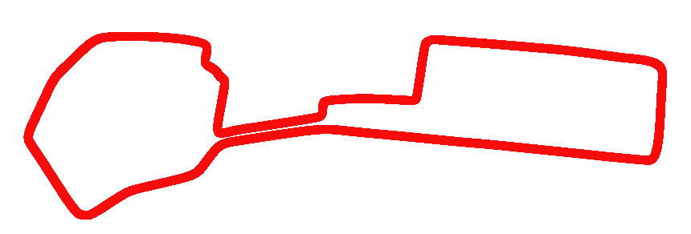
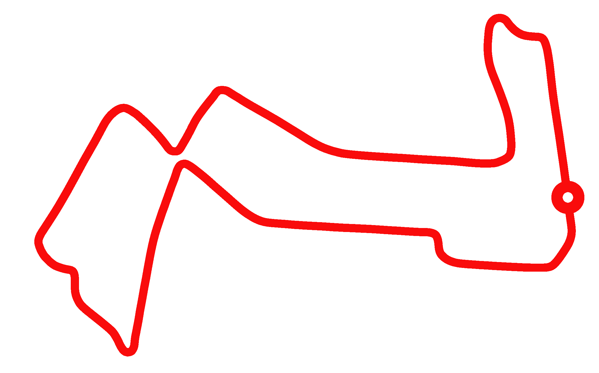
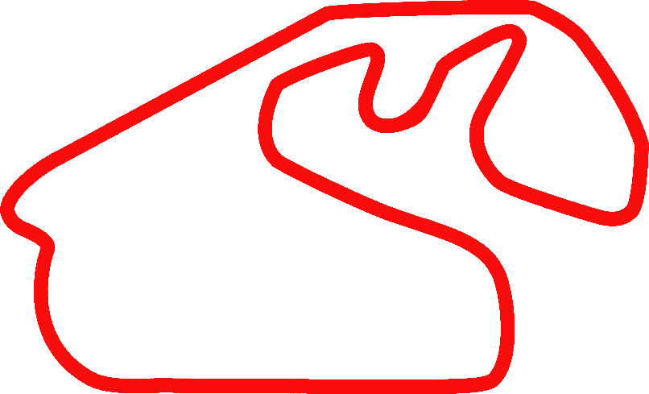
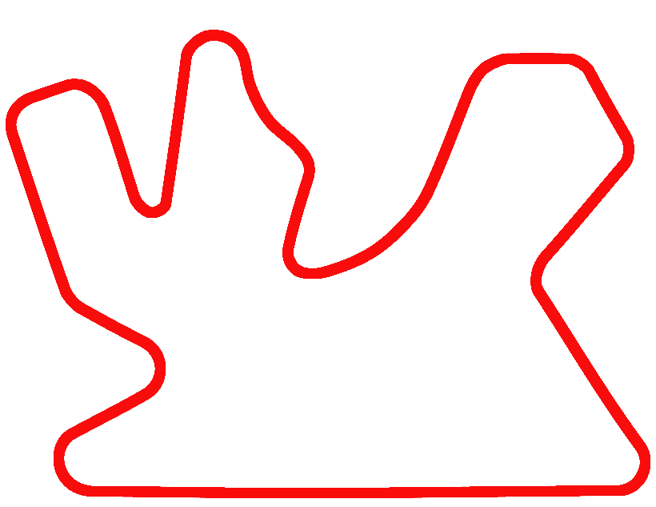

Austrália – Albert Park (Melbourne)
08 de março de 2026
Sobre a pista: circuito semi-urbano de 5,303 km com 16 curvas, volta repetida em 58 voltas.
Curiosidade: é a primeira vez desde 2019 que Melbourne abre a temporada.
Maior campeão: Schumacher e Lex Davison com 4 vitórias; Ferrari lidera entre construtoras.

Japão – Suzuka International Racing Course (Suzuka)
29 de março de 2026
Sobre a pista: circuito de 5,807 km, 18 curvas, um dos poucos “oito” invertido do mundo
Curiosidade: palco icônico para decisões de campeonato, com o famoso “S” de esses no início
Maior campeão: Lewis Hamilton venceu 4 vezes em Suzuka

Bahrain – Bahrain International Circuit (Sakhir)
04 de outubro de 2026
Sobre a pista: 57 voltas em 5,412 km, localizada no deserto; notable pela iluminação noturna
Curiosidade: primeiro GP do Oriente Médio e inclui largada sob luz artificial
Maior campeão: Lewis Hamilton venceu 5 vezes

Estados Unidos – Miami (Miami Int. Autodrome)
03 de maio de 2026
Sobre a pista: ccircuito urbano semi-permanente de 5,41 km, 19 curvas, parte do complexo do Hard Rock Stadium.
Curiosidade: conta com o formato Sprint em 2025 – já é o segundo ano consecutivo com sprint em Miami
Maior campeão: ainda recente (estreia em 2022); sem dominador claro.

Itália – Emilia‑Romagna (Imola)
06 de setembro de 2026
Sobre a pista:4,909 km com 19 curvas, traçado sinuoso e técnico, antigo palco dos internazionali.
Curiosidade: circuito "old school" que sobreviveu a fortes tempestades em 2023; sediou sprint em 2025.
Maior campeão: Max Verstappen venceu em 2025 e também anteriores, é o maior vencedor rec ente.

Mônaco – Circuit de Monaco
07 de junho de 2026
Sobre a pista: 3,337 km, 78 voltas, traçado mais curto com curvas de baixa velocidade e bordas estreitas.
Curiosidade: é o circuito mais curto e com menor distância por volta; considerado o mais glamuroso.
Maior campeão: Ayrton Senna lidera com 6 vitórias no Principado.

Espanha – Barcelona‑Catalunya
13 de setembro de 2026
Sobre a pista: 4,657 km com 16 curvas; equilíbrio entre reta, alta e baixa velocidade.
Curiosidade: embora com reta longa, ultrapassagens são difíceis; foi remodelada após acidente na MotoGP em 2016.
Maior campeão: Fernando Alonso e Lewis Hamilton – ambos com múltiplas vitórias.

Canadá – Circuit Gilles‑Villeneuve
24 de maio de 2026
Sobre a pista: 4,361 km com zonas de reta longas e chicane exigentes, no centro de Montreal.
Curiosidade: famoso pelo “Wall of Champions” – muro que já eliminou grandes campeões.
Maior campeão: Michael Schumacher, com 7 vitórias no Canadá.

Áustria – Red Bull Ring
28 de junho de 2026
Sobre a pista: traçado curto de 4,318 km, poucas curvas, alternando inclinação e retas de alta.
Curiosidade: local de testes da Red Bull, e palco de treinos de contagem regressiva.
Maior campeão: Max Verstappen venceu 5 vezes aqui.

Reino Unido – Silverstone
05 de julho de 2026
Sobre a pista: circuito “pátria da F1”, misto de retas e chicanes rápidas, histórico intenso.
Curiosidade: primeira corrida noturna de rua na temporada F1
Maior campeão: ainda recente e sem dominador claro

Bélgica – Spa‑Francorchamps
19 de julho de 2026
Sobre a pista: 7,004 km (o mais longo do calendário), 19 curvas, mix de alta velocidade e elevação.
Curiosidade: atualmente o circuito mais longo ativo .
Maior campeão: Michael Schumacher e Lewis Hamilton dividem domínio, cada um com 4–5 vitórias.

Hungria – Hungaroring
26 de julho de 2026
Sobre a pista: 4,381 km, traçado apertado estilo kartódromo, exigência de alta downforce.
Curiosidade: uma das pistas com menos ultrapassagem do calendário.
Maior campeão: Lewis Hamilton, com 8 vitórias.

Países Baixos – Zandvoort
23 de agosto de 2026
Sobre a pista: 4,252 km, curvas rápidas, ambiente com dunas e fãs animados.
Curiosidade: volta ao calendário em 2021; com uma das curvas mais inclinadas (Banking) .
Maior campeão: Max Verstappen venceu 4 vezes em Zandvoort.

Itália – Monza
06 de setembro de 2026
Sobre a pista: 5,793 km, altíssima velocidade, poucas curvas, "Templo da Velocidade".
Curiosidade:o circuito que mais recebeu GPs: 74 até 2025.
Maior campeão: Michael Schumacher, com 5 vitórias.

Azerbaijão – Baku City Circuit
26 de setembro de 2026
Sobre a pista:6,003 km de circuito urbano, reta de 2,2 km, mistura de muralhas e alta velocidade.
Curiosidade: ultrapassagem em reta gigantesca, risco alto por muros próximos.
Maior campeão:Valtteri Bottas, com 2 vitórias; disputado, sem domínio claro.

Cingapura – Marina Bay
11 de outubro de 2026
Sobre a pista: circuito urbano de 5,063 km, 23 curvas, corrida noturna em ambiente urbano.
Curiosidade: única corrida noturna permanente do campeonato.
Maior campeão:Lewis Hamilton, com 4 vitórias.

Estados Unidos – Circuito das Américas (Austin)
25 de outubro de 2026
Sobre a pista: 5,513 km, sobe/ desce com curvas mistas e reta principal longa, formato desafiador
Curiosidade: recebeu sprint em 2025
Maior campeão: Lewis Hamilton, com 5 vitórias

México – Autódromo Hermanos Rodríguez
01 de novembro de 2026
Sobre a pista: 4,304 km, famoso pelo estádio Foro Sol e altitude elevada
Curiosidade: recorde de altitude que impacta performances
Maior campeão: Red Bull (Verstappen) venceu 3–4 vezes

Brasil – Interlagos (São Paulo)
08 de novembro de 2026
Sobre a pista: 4,309 km, traçado ondulado, combinações de curvas lentas/rápidas
Curiosidade: sprint em 2025; sempre corridas emocionantes
Maior campeão: Michael Schumacher e Ayrton Senna lideram em vitórias (4)

Estados Unidos – Las Vegas Strip
03 de maio de 2026
Sobre a pista: circuito urbano de 6,12 km, uma das maiores distâncias de corrida (309 km)
Curiosidade: é a mais longa corrida do calendário em km
Maior campeão: sem dominador definido (estreia em 2023)

Catar – Lusail International Circuit
29 de novembro de 2026
Sobre a pista: circuito moderno de 5,414 km, mistura retas e mistas, iluminação total
Curiosidade: sprint em 2025
Maior campeão: Max Verstappen venceu em 2023 e 2024

Emirados Árabes – Yas Marina (Abu Dhabi)
06 de dezembro de 2026
Sobre a pista: 5,279 km, corrida ao entardecer com pit-stop sob as luzes; hotel Yas Marina sobre a reta
Curiosidade: encerra a temporada sob – e depois – luzes artificiais
Maior campeão: Lewis Hamilton, com 4 vitórias